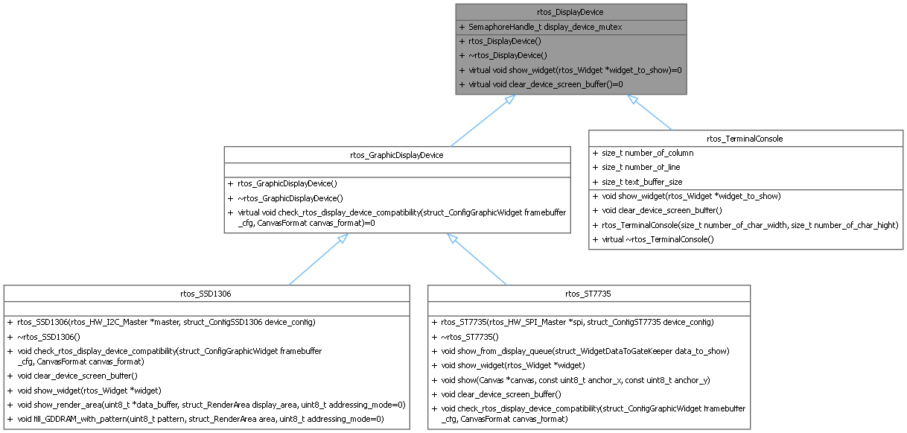
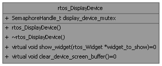

- Generated by
 1.16.1
1.16.1
The RTOS display device is the base class for all display devices that are managed by a dedicated display task in an RTOS environment. More...
#include <display_device.h>


Public Member Functions | |
| virtual void | show_widget (rtos_Widget *widget_to_show)=0 |
| Show the widget on the display device. | |
| virtual void | clear_device_screen_buffer ()=0 |
| Clear the device screen buffer. | |
Public Attributes | |
| SemaphoreHandle_t | display_device_mutex |
| the mutex to protect the display device access | |
The RTOS display device is the base class for all display devices that are managed by a dedicated display task in an RTOS environment.
|
pure virtual |
Clear the device screen buffer.
Implemented in rtos_SSD1306, rtos_ST7735, and rtos_TerminalConsole.
|
pure virtual |
Show the widget on the display device.
| widget_to_show | the widget to show |
Implemented in rtos_SSD1306, rtos_ST7735, and rtos_TerminalConsole.